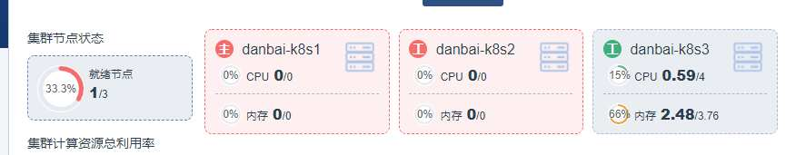

k8s 节点未就绪,容器正常运行
- 作者:
- 淡白
- 创建时间：
- 2020-09-18 18:54:33
- k8s
摘要：文章描述了在打开k8s控制面板时遇到的异常状态，即主节点和k8s2两个节点都未就绪，并且部分容器服务处于未运行状态，而非k8s容器正常运行。作者尝试通过重启kubelet.service来解决问题，成功恢复了正常状态。最后，作者附上了一张重启成功后的截图。
异常状态
今天打开k8s控制面板,看到主节点和k8s2两个节点都未就绪. 查看容器服务有些服务处于未运行状态. 运行在容器上的非k8s容器正常运行. 
重启kubelet.service
我尝试百度后,重启k8s服务
systemctl restart kubelet.service 解决了